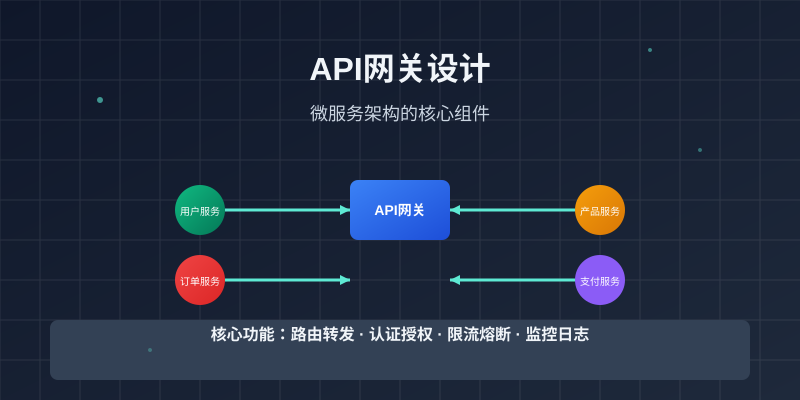

微服务架构下的API网关设计与实现
在微服务架构日益普及的今天，API网关作为系统的入口点，承担着路由、认证、限流等重要职责。本文将系统性地介绍API网关的设计原则、核心功能以及主流实现方案。
API网关的核心价值

API网关在微服务架构中的位置
API网关是微服务架构中的关键组件，它作为所有外部请求的统一入口，提供以下核心价值：
统一入口点
- 简化客户端调用逻辑
- 隐藏内部服务拓扑结构
- 提供统一的API管理界面
横切关注点处理
- 身份认证和授权
- 请求限流和熔断
- 日志记录和监控
- 数据转换和协议适配
主流API网关方案比较
Kong Gateway
Kong是基于Nginx和OpenResty构建的开源API网关，具有以下特点：
- 高性能: 基于Nginx，支持高并发
- 插件生态: 丰富的插件体系
- 云原生: 支持Kubernetes部署
- 企业级功能: 提供商业版支持
Spring Cloud Gateway
Spring生态中的API网关解决方案：
- Java友好: 与Spring Boot深度集成
- 响应式编程: 基于WebFlux，支持异步非阻塞
- 声明式路由: 使用YAML或Java配置
- 过滤器链: 灵活的过滤器机制
Envoy Proxy
Envoy是云原生时代的明星项目：
- 高性能: C++编写，性能卓越
- 动态配置: 支持xDS协议动态更新
- 可观测性: 内置丰富的监控指标
- 服务网格: Istio的核心组件
实际设计案例
路由配置示例
以下是一个基于Spring Cloud Gateway的路由配置示例：
spring:
cloud:
gateway:
routes:
- id: user-service
uri: lb://user-service
predicates:
- Path=/api/users/**
filters:
- StripPrefix=1
- name: RequestRateLimiter
args:
redis-rate-limiter.replenishRate: 10
redis-rate-limiter.burstCapacity: 20
- id: product-service
uri: lb://product-service
predicates:
- Path=/api/products/**
filters:
- StripPrefix=1
- name: JwtAuthentication
args:
secret: ${JWT_SECRET}
自定义过滤器实现
对于复杂的业务逻辑，可以编写自定义过滤器：
@Component
public class LoggingFilter implements GlobalFilter, Ordered {
private static final Logger logger = LoggerFactory.getLogger(LoggingFilter.class);
@Override
public Mono<Void> filter(ServerWebExchange exchange, GatewayFilterChain chain) {
ServerHttpRequest request = exchange.getRequest();
// 记录请求信息
logger.info("请求路径: {}, 方法: {}, 来源IP: {}",
request.getPath(),
request.getMethod(),
request.getRemoteAddress());
// 添加请求头
ServerHttpRequest modifiedRequest = request.mutate()
.header("X-Request-Time", Instant.now().toString())
.build();
return chain.filter(exchange.mutate().request(modifiedRequest).build());
}
@Override
public int getOrder() {
return -1;
}
}
性能优化策略
缓存策略
在API网关层面实现缓存可以显著提升性能：
- 响应缓存: 缓存后端服务的响应结果
- 路由缓存: 缓存路由匹配结果
- 认证缓存: 缓存用户认证信息
连接池管理
合理的连接池配置对性能至关重要：
# Spring Cloud Gateway连接池配置
spring:
cloud:
gateway:
httpclient:
pool:
type: elastic
max-connections: 1000
max-idle-time: 30000
acquire-timeout: 45000
安全最佳实践
JWT认证集成

JWT认证流程示意图
实现安全的JWT认证流程：
@Component
public class JwtAuthenticationFilter implements GatewayFilter {
@Override
public Mono<Void> filter(ServerWebExchange exchange, GatewayFilterChain chain) {
String token = extractToken(exchange.getRequest());
if (token == null) {
return unauthorized(exchange);
}
try {
Claims claims = Jwts.parser()
.setSigningKey(secret)
.parseClaimsJws(token)
.getBody();
// 验证权限
if (!hasPermission(claims, exchange.getRequest().getPath().value())) {
return forbidden(exchange);
}
// 将用户信息添加到请求头
ServerHttpRequest modifiedRequest = exchange.getRequest().mutate()
.header("X-User-Id", claims.getSubject())
.header("X-User-Roles", String.join(",", getRoles(claims)))
.build();
return chain.filter(exchange.mutate().request(modifiedRequest).build());
} catch (Exception e) {
return unauthorized(exchange);
}
}
}
限流和熔断
防止系统过载的关键措施：
# 基于Redis的限流配置
spring:
cloud:
gateway:
routes:
- id: rate-limited-route
uri: lb://backend-service
predicates:
- Path=/api/**
filters:
- name: RequestRateLimiter
args:
key-resolver: "#{@userKeyResolver}"
redis-rate-limiter.replenishRate: 10
redis-rate-limiter.burstCapacity: 20
redis-rate-limiter.requestedTokens: 1
监控和可观测性
指标收集
集成Prometheus和Grafana实现监控：
management:
endpoints:
web:
exposure:
include: health,info,metrics,prometheus
metrics:
export:
prometheus:
enabled: true
日志聚合
使用ELK栈进行日志分析：
@Configuration
public class LoggingConfig {
@Bean
public GlobalFilter loggingFilter() {
return (exchange, chain) -> {
long startTime = System.currentTimeMillis();
return chain.filter(exchange).then(Mono.fromRunnable(() -> {
long duration = System.currentTimeMillis() - startTime;
MDC.put("requestId", exchange.getRequest().getId());
MDC.put("duration", String.valueOf(duration));
logger.info("请求处理完成，耗时: {}ms", duration);
MDC.clear();
}));
};
}
}
部署和运维考虑
高可用部署
确保API网关的高可用性：
- 多实例部署: 使用负载均衡器分发流量
- 健康检查: 定期检查后端服务状态
- 蓝绿部署: 实现无缝版本升级
- 回滚策略: 快速回滚到稳定版本
配置管理
动态配置更新的实现：
# 使用Config Server进行配置管理
spring:
cloud:
config:
uri: http://config-server:8888
label: main
gateway:
discovery:
locator:
enabled: true
lower-case-service-id: true
总结
API网关是现代微服务架构中不可或缺的组件。通过合理的设计和实现，API网关不仅能够提升系统的安全性和性能，还能简化客户端的调用逻辑。
在选择和实现API网关时，需要根据具体的业务需求、技术栈和团队能力进行权衡。无论是选择成熟的开源方案还是自研实现，都需要关注性能、安全性和可维护性这三个核心维度。
随着云原生技术的发展，API网关的功能和形态也在不断演进，未来我们将看到更多智能化的网关解决方案出现。
图片建议清单：
- api-gateway-cover.jpg: API网关架构示意图，展示请求流转过程
- gateway-architecture.jpg: 微服务架构中API网关的位置关系图
- jwt-flow.jpg: JWT认证流程的时序图
- monitoring-dashboard.jpg: API网关监控仪表板截图